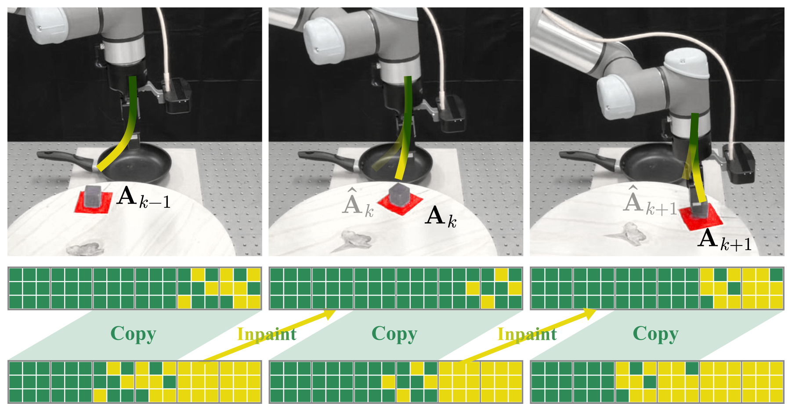
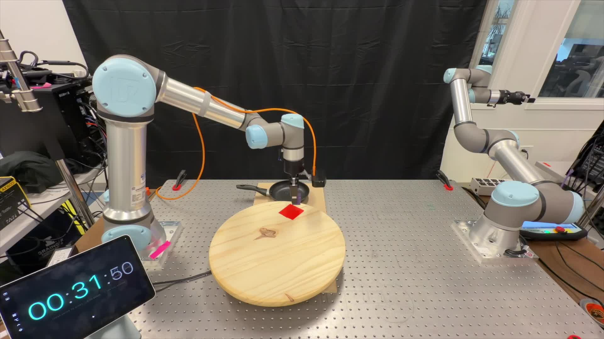

Figure 1: Async Execution with discrete diffusion policies solving dynamic manipulation. Gray rectangles and blocks represent the action chunks and the actions. Yellow and green cubes represent the masked and unmasked action tokens. During each inference cycle, discrete diffusion policies copy the tail of the last action chunk as the committed prefix, and inpaint upon it by simply forwarding itself. Compared with flow-matching-based inpainting that relies on $\Pi$GDM, discrete-diffusion-based inpainting inference is simpler to implement, faster at inference, and better at execution.
Flow-matching-based real-time chunking (RTC) is ill-suited for asynchronous execution due to four critical limitations. By replacing the action head with a discrete diffusion policy, all the aforementioned limitations can be resolved at once. Or, to put it simply: Discrete diffusion policies are natural asynchronous executors. During asynchronous execution, discrete diffusion policy achieves:
Unlike chatbots, physical AI must act while the world keeps evolving. The inter-chunk pause of synchronous executors is fatal for dynamic tasks — regardless of how fast the inference is. Asynchronous execution — thinking while acting — is therefore a structural requirement, and real-time chunking (RTC) makes it viable by recasting chunk transitions as inpainting: freezing committed actions and consistently generating the rest.
However, RTC with a flow-matching policy is structurally suboptimal: its inpainting comes from inference-time corrections rather than the base policy, yielding little pre-training benefit, specific fine-tuning, heuristic guidance weights, and extra computation that inflates the latency.
In this work, we observe that discrete diffusion policies, which generate actions by iteratively unmasking, are natural asynchronous executors that resolve all limitations at once: they are fine-tuning free since inpainting is their native operation, while early stopping further provides adaptive guidance and reduces inference cost.
We propose DiscreteRTC, which replaces external corrections with native unmasking, and show on dynamic simulated benchmarks and real-world dynamic manipulation tasks that it achieves higher success rates than continuous RTC and other baselines — while being simpler to implement, faster at inference, and better at execution.
RTC was specifically designed for flow-matching policies — the predominant action head in today's state-of-the-art VLAs. Yet, as we systematically show, RTC with a flow-matching head is far from ideal with four critical limitations, all stemming from the same root cause: the inpainting capability comes from inference-time correction (e.g., $\Pi$GDM), not from the base policy.
Figure 2: RTC with a flow-matching head. Color encodes noise level (green = clean, yellow = pure noise).
Flow-matching pre-training corrupts every action in a chunk at a single, consistent noise level $\tau$. RTC inference instead starts from an inconsistent chunk — 0 for committed, 1 for new, interpolated in between — a pattern the model has never seen. Therefore, $\Pi$GDM corrections are inevitable and scaling pre-training does not directly improve asynchronous performance.
Adequate inpainting quality demands a dedicated fine-tuning stage with techniques such as action-suffix conditioning to explicitly introduce the inpainting-specific noise pattern. This adds training complexity, risks interfering with base generation quality, and is especially burdensome for large VLAs already expensive to fine-tune.
$\Pi$GDM's soft-masking weights $\mathbf{W}$ follow a hand-crafted exponential-decay schedule, and the clipping threshold $\beta$ is fixed across delays, execution horizons, and tasks — validated only empirically. The schedule cannot adapt to inference-time conditions.
Computing the guidance term at every denoising step requires a vector-Jacobian product (VJP), which roughly doubles per-step computation — ironically inflating the very latency RTC was designed to hide.
Rather than seeking innovation within the flow-matching paradigm, our key observation is structural: replacing the action head with a discrete diffusion policy resolves all four limitations at once. In discrete diffusion, inpainting is the native operation — given a partially masked token sequence, the policy reconstructs the target chunk by predicting the masked tokens, identical to standard masked generation.
Figure 3: RTC with a discrete diffusion head. Color encodes masking status (green = unmasked, yellow = masked).
Discrete diffusion policies are pre-trained to inpaint upon randomly masked sequences — structurally identical to RTC's inference-time pattern. Scaling pre-training (model, data, compute) directly improves asynchronous performance, and the native forward pass suits inference-time inpainting out of the box.
Inpainting-specific patterns are implicitly introduced during pre-training, making discrete diffusion a fine-tuning-free approach for high-quality, out-of-the-box asynchronous execution — no extra loss term, training stage, or implementation work.
Once a token is unmasked, it already carries a clear action semantic — unlike flow-matching, where the chunk is only valid at $\tau{=}1$. We can early-exit inference once the next $s$ actions after the $d$ committed ones are unmasked; the remaining $H-d-s$ partially-unmasked tokens carry over as a natural and adaptive guidance signal for the next inference, replacing the heuristic fixed schedule.
With committed tokens from previous chunks, the tokens to unmask per inference shrink to roughly $s/H$ of the original (or at least $1-d/H$). DiscreteRTC reduces inference cost rather than inflating it — or, alternatively, keeps the step budget fixed and produces finer-grained actions at the same compute as from-scratch generation.
We evaluate DiscreteRTC on Kinetix — a dynamic-task benchmark where added Gaussian actuation noise makes closed-loop corrections critical. Built on the official RTC codebase, the flow-matching and discrete diffusion policies share the same architecture (only the final logits layer differs) and use a trivial $512$-bin action quantization; each datapoint averages 2,048 trials.
Three additional variants are introduced under Extended Results below (Training-time Continuous RTC, DiscreteRTC + Fixed Steps, DiscreteVLASH).
Across delays, DiscreteRTC consistently beats ContinuousRTC and other variants on both solve rate and throughput. Three further takeaways from the extended results: (1) DiscreteRTC outperforms Training-time Continuous RTC despite being fine-tuning free; (2) at the same compute, DiscreteRTC + Fixed Steps lifts performance via finer-grained actions; (3) DiscreteVLASH stabilizes performance across delays at a small low-delay cost — DiscreteRTC composes cleanly with advanced inference-time methods.
We validate DiscreteRTC on a UR5e + Robotiq gripper with a wrist-mounted RGB camera, running at 20 Hz on a single RTX 4090. All policies share a Qwen2.5-VL-3B-Instruct VLM backbone with a layerwise cross-attention DiT action head (StarVLA). Two reactiveness-stress tasks — Dynamic Pick (moving object) and Dynamic Place (moving platform) — are each evaluated over 20 trials.

Figure 6: Real-world setup for Dynamic Pick & Dynamic Place — UR5e + Robotiq gripper, wrist-mounted RGB, turntable target.
| Method | Success Rate (↑) | Inference Time (↓) | |
|---|---|---|---|
| Dynamic Place | Dynamic Pick | ||
| Continuous Sync | 0% | 0% | 151 ms |
| Discrete Sync | 0% | 0% | 303 ms |
| Continuous RTC | 90% | 45% | 256 ms (~1.7×) |
| Discrete RTC (Ours) | 100% | 95% | 206 ms (~0.7×) |
Table 1: Both Sync baselines completely fail (0%), confirming reactive asynchronous execution is indispensable. DiscreteRTC tops ContinuousRTC with the largest gap on the continuously moving Dynamic Pick. Costs move in opposite directions: ContinuousRTC inflates flow-matching inference (151 → 256 ms, $\sim$1.7× $\Pi$GDM overhead), while DiscreteRTC reduces discrete diffusion inference (303 → 206 ms) — RTC and discrete diffusion compound rather than conflict.
We presented DiscreteRTC, which exploits the native inpainting capability of discrete diffusion for asynchronous real-time control — eliminating the need for inpainting-specific fine-tuning, heuristic guidance weights, and extra inference cost inherent to flow-matching-based RTC. Simulated and real-world experiments show that DiscreteRTC outperforms ContinuousRTC and other asynchronous baselines, while being simpler to implement, faster at inference, and better at execution — and composes seamlessly with methods such as VLASH for further gains.
Each limitation coincides with an active research direction whose progress directly benefits DiscreteRTC:
@article{wang2026discreterc,
title = {DiscreteRTC: Discrete Diffusion Policies are Natural Asynchronous Executors},
author = {Wang, Pengcheng and Hong, Kaiwen and Peng, Chensheng and
Driggs-Campbell, Katherine and Tomizuka, Masayoshi and
Xu, Chenfeng and Tang, Chen},
journal = {arXiv preprint},
year = {2026}
}